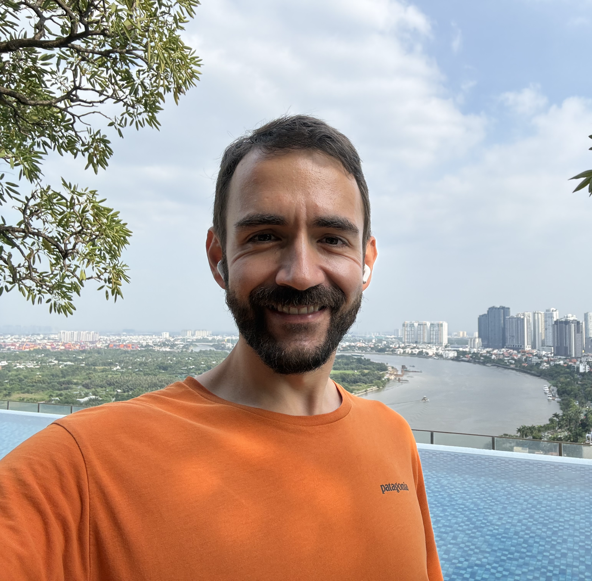

Fil Chelarescu
Fil studied Computer Science at Cornell University and worked at Microsoft for 12 years. A meditator since his teenage years, he recently tried retiring early and found that building things that help people is way more fun.